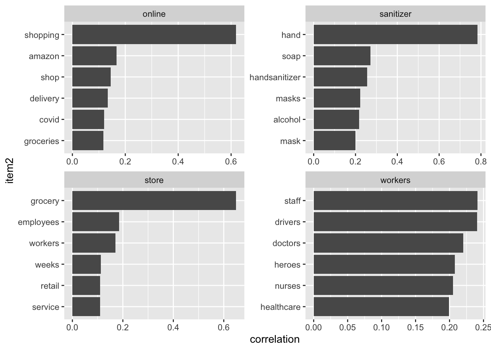

4.3 Counting and correlating pairs of words with widyr
Understanding where words co-occur in documents, even though they may not occur next to each other is another piece of useful information.
widyr = a package to make matrix operations, like pairwise counts or correlations between two words in the same document, on tidy data easier.
For the purposes of our covid example, lets look at only tweets that are “Extremely Positive” and then group them into chunks of 10 tweets. By the way, these tweets span between 03/01/2020 to 04/01/2020. It would have probably been better to convert the TweetAt variable into a date and sort so that we can have chunks in chronological order…
covid_chunk_words <- covid_tweets %>%
filter(Sentiment == "Extremely Positive") %>%
mutate(chunk = row_number() %/% 10) %>%
filter(chunk > 0) %>%
unnest_tokens(word, OriginalTweet) %>%
filter(!word %in% stop_words$word)
covid_chunk_words## # A tibble: 123,673 × 7
## UserName ScreenName Location TweetAt Sentiment chunk word
## <dbl> <dbl> <chr> <chr> <chr> <dbl> <chr>
## 1 3845 48797 Drogheda 16-03-2020 Extremely Positive 1 share
## 2 3845 48797 Drogheda 16-03-2020 Extremely Positive 1 65
## 3 3845 48797 Drogheda 16-03-2020 Extremely Positive 1 living
## 4 3845 48797 Drogheda 16-03-2020 Extremely Positive 1 struggling
## 5 3845 48797 Drogheda 16-03-2020 Extremely Positive 1 2
## 6 3845 48797 Drogheda 16-03-2020 Extremely Positive 1 local
## 7 3845 48797 Drogheda 16-03-2020 Extremely Positive 1 supermarket
## 8 3845 48797 Drogheda 16-03-2020 Extremely Positive 1 due
## 9 3845 48797 Drogheda 16-03-2020 Extremely Positive 1 issues
## 10 3845 48797 Drogheda 16-03-2020 Extremely Positive 1 19
## # … with 123,663 more rowslibrary(widyr)
# count words co-occuring within sections
word_pairs <- covid_chunk_words %>%
pairwise_count(word, chunk, sort = TRUE)## Warning: `distinct_()` was deprecated in dplyr 0.7.0.
## Please use `distinct()` instead.
## See vignette('programming') for more help
## This warning is displayed once every 8 hours.
## Call `lifecycle::last_lifecycle_warnings()` to see where this warning was generated.## # A tibble: 9,056,928 × 3
## item1 item2 n
## <chr> <chr> <dbl>
## 1 t.co https 653
## 2 https t.co 653
## 3 https coronavirus 639
## 4 t.co coronavirus 639
## 5 coronavirus https 639
## 6 coronavirus t.co 639
## 7 covid 19 621
## 8 https 19 621
## 9 t.co 19 621
## 10 19 covid 621
## # … with 9,056,918 more rowsMost common pair of words are links, but outside of those is “covid-19” and “store”
## # A tibble: 19,409 × 3
## item1 item2 n
## <chr> <chr> <dbl>
## 1 store https 543
## 2 store t.co 543
## 3 store coronavirus 538
## 4 store 19 521
## 5 store covid 514
## 6 store grocery 492
## 7 store supermarket 431
## 8 store amp 412
## 9 store food 403
## 10 store prices 389
## # … with 19,399 more rows4.3.1 Pairwise correlation
# we need to filter for at least relatively common words first
word_cors <- covid_chunk_words %>%
group_by(word) %>%
filter(n() >= 20) %>%
pairwise_cor(word, chunk, sort = TRUE)
word_cors## # A tibble: 761,256 × 3
## item1 item2 correlation
## <chr> <chr> <dbl>
## 1 t.co https 1
## 2 https t.co 1
## 3 paper toilet 0.857
## 4 toilet paper 0.857
## 5 covid 19 0.841
## 6 19 covid 0.841
## 7 doctors nurses 0.819
## 8 nurses doctors 0.819
## 9 sanitizer hand 0.783
## 10 hand sanitizer 0.783
## # … with 761,246 more rowsLet’s find words most correlated to “store”
## # A tibble: 872 × 3
## item1 item2 correlation
## <chr> <chr> <dbl>
## 1 store grocery 0.649
## 2 store employees 0.185
## 3 store workers 0.171
## 4 store weeks 0.113
## 5 store retail 0.110
## 6 store service 0.110
## 7 store coronacrisis 0.109
## 8 store clerks 0.109
## 9 store community 0.108
## 10 store 30 0.106
## # … with 862 more rowsword_cors %>%
filter(item1 %in% c("store", "workers", "online", "sanitizer")) %>%
group_by(item1) %>%
slice_max(correlation, n = 6) %>%
ungroup() %>%
mutate(item2 = reorder(item2, correlation)) %>%
ggplot(aes(item2, correlation)) +
geom_bar(stat = "identity") +
facet_wrap(~ item1, scales = "free") +
coord_flip()